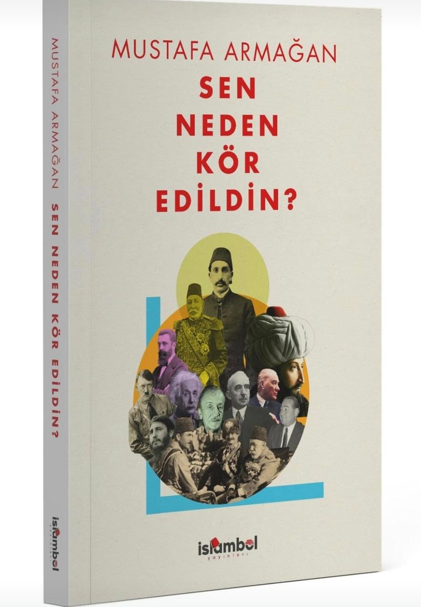

Sen Neden Kör Edildin?
Mustafa Armağan
“Ezberleri sorgulamak ise yazarın vazgeçemediği tutkusu.” (yayınevi tanıtım metninden)
Palet: kâğıt, mürekkep, mühür
Oranlarkontrast.mjs ile ölçüldü#F4EFE4 · zeminmürekkep 14.81:1
#FAF7F0 · kart, modalmürekkep 15.88:1
#EAE3D4 · footer, yuvamürekkep 13.30:1
#1E1C1A · metinAAA
#3A3632 · ikincil10.44:1
#6A6257 · künye5.24:1 (AA)
#CFC6B4 · 1px ayırıcımetin için değil
#A51C22 · tek vurgukâğıtta 6.57:1
Tipografi: EB Garamond + IBM Plex Sans
7 kademe, akışkanTip örneği metni Direktörün verdiği dizgi cümlesidir; katalog verisi değildir.
Düğmeler ve durumlar
yükseklik 44px · yarıçap 2pxVarsayılan
Üzerinde
Odak (klavye)
Basılı
Pasif
Sipariş verSipariş verSipariş verSipariş ver Tüm kitaplarTüm kitaplarTüm kitaplarTüm kitaplar Künyeyi görKünyeyi görKünyeyi görKünyeyi görEkran başına tek birincil (kırmızı) düğme. Odak halkası: 2px mühür kırmızısı, 2px boşluk.
İçeriğe geç ← skip-link, odaklanınca sol üstte belirir
Katalog: filtre, kart, sayfalama
Tüm kitaplar →“Önizle” dosya sekmesi yalnız önizlemesi olan kitapta görünür. Ortadaki kart üzerinde (hover) durumunu gösterir: kapak 4px yükselir, başlığın alt çizgisi belirir.
Kitap detay: künye, yazar, sipariş
İğneli Fıçı| Yazar | Cevat Rıfat Atilhan |
|---|---|
| ISBN | 978-625-5529-43-5 |
| Sayfa | 208 |
| Boyut | 13,5 × 19,5 cm |
| Cilt | Karton kapak |
| Kâğıt | Kitap kâğıdı |
| Yayın tarihi | Şubat 2026 |
| Kategori | Araştırma-İnceleme |
Bu kitabı WhatsApp üzerinden doğrudan yayınevinden isteyin.
WhatsApp ile sipariş ver +90 505 980 87 35 Kitapçılarda bul: Kitapyurdu, Nobel, Küreselİlk sayfalar: sayfa çevirme çerçevesi
modal · Esc ile kapanır
Sayfa sayısı örnektir. İç sayfa görselleri beyaz; sahne zemini çökük kâğıt (#EAE3D4), sayfaları masaya konmuş gerçek yaprak gibi ayırır.
Gece arşivi (karanlık tema)
ikincil öncelikTarihi doğru okumak için…
Koyu kâğıt #171513, açık mürekkep #ECE5D6, kemik #A39886. Kırmızı korunur: metin vurgusu #E0675C, düğme zemini #B3262B. Kapak yuvası açık kalır; beyaz zeminli kapak çekimleri karanlıkta da kâğıt üstünde durur.